컴퓨터응용밀링기능사 (2009-01-18 기출문제)
1과목: 기계재료 및 요소
1. SM25C로 KS 규격기호로 표시되어 있는 기계구조용 탄소강의 재질 기호에서 '25'란 숫자를 올바르게 설명한 것은?
- 인장강도가 약 25 kgf/㎟ 정도이다.
- 탄소함유량이 약 0.25% 정도이다.
- 연신율이 약 25% 정도이다.
- 브리넬 경도가 약 25 정도이다.
(정답률: 69%)

2. 일반적인 철공용 줄의 재질은 보통 어떤 것을 가장 많이 사용하는가?
- 고속도강
- 초경질 합금강
- 주강
- 탄소 공구강
(정답률: 65%)
3. 체인 전동의 특성이 아닌 것은?
- 속도비가 일정하다.
- 유지와 수리가 간단하다.
- 내열, 내유, 내습성이 강하다.
- 진동과 소음이 없다.
(정답률: 82%)
4. 스프링을 연결하는 경우 직렬접속인 것은?(단, W는 하중이고 K1, K2, K3는 스프링 상수이다.)
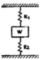
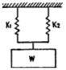
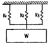
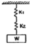
(정답률: 73%)
5. 청동의 주성분은?
- Cu-Zn
- Cu-Pb
- Cu-Sn
- Cu-Ni
(정답률: 60%)
6. 핀(pin)의 종류에 대한 설명으로 틀린 것은?
- 테이퍼 핀은 축에 보스를 고정시킬 때 사용하며 테이퍼는 보통 1/50 이다.
- 평행핀은 분해, 조립하는 부품의 맞춤면의 관계 위치를 항상 일정하게 할 필요가 있을 때 사용한다.
- 분할핀은 한쪽 끝이 2가닥으로 갈라진 핀으로 축에 끼워진 부품이 빠지는 것을 막는다.
- 스프링 핀은 2개의 봉을 연결하기 위해 구멍에 수직으로 평행핀을 끼워 2개의 봉이 상대 각운동을 할 수 있도록 연결한 것이다.
(정답률: 57%)
7. 알루미늄-구리-마그네슘-망간계의 단조용 알루미늄 합금은?
- 실루민
- 하이드로날륨
- Y 합금
- 두랄루민
(정답률: 69%)
8. 3줄 나사로 피치가 4mm인 수나사를 1/10 회전시키면 몇 mm 이동하는가?
- 0.04
- 0.4
- 1.2
- 0.12
(정답률: 65%)
9. 내열강에서 내열성을 증가시키기 위하여 첨가되는 대표적인 원소는?
- Zn
- Cr
- Cu
- S
(정답률: 50%)
10. 초경합금에 대한 설명 중 틀린 것은?
- 경도가 HRC 50 이하로 낮다.
- 고온경도 및 강도가 양호하다.
- 내마모성과 압축강도가 높다.
- 사용목적, 용도에 따라 재질의 종류가 다양하다.
(정답률: 67%)
11. 뜨임에는 담금질된 강을 경도와 조절을 목적으로 하는 저온 뜨임과 고온 뜨임이 있는데 저온 뜨임의 목적이 아닌 것은?
- 담금질 응력 부여
- 치수의 경년변화 방지
- 연마 균열의 방지
- 내마모성의 향상
(정답률: 47%)
12. 베어링 호칭 번호 6208에서 안지름은 몇 mm 인가?
- 8
- 18
- 32
- 40
(정답률: 73%)
13. 지름 50 mm인 단면에 하중 4500 N 가 작용할 때 발생 되는 응력은 약 몇 N/mm2 인가?
- 2.3
- 4.6
- 23
- 46
(정답률: 33%)
14. 범용 선반, 밀링머신 등의 동력전달장치에서 가장 많이 사용되는 벨트는?
- 평 벨트
- V 벨트
- 직물 벨트
- 털 벨트
(정답률: 73%)
15. 브레이크 축 방향으로 압력이 작용하며 압력분포 상태에 따라 원판브레이크, 원추브레이크로 분류되는 것은?
- 밴드브레이크
- 블록브레이크
- 전자브레이크
- 축압브레이크
(정답률: 63%)
2과목: 기계제도(절삭부분)
16. 불규칙한 파형의 가는 실선 또는 지그재그 선을 사용하는 것은?
- 파단선
- 치수보조선
- 치수선
- 지시선
(정답률: 77%)
17. 보기 입체도에서 화살표 방향을 정면도로 할 경우 평면도로 가장 적합한 형상은?
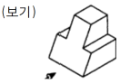
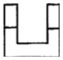
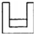
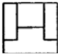
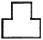
(정답률: 70%)
18. 표면의 결 도시 기호 중 줄무늬 방향의 기호가 "=" 인 것은 무엇을 뜻하는가?
- 가공에 의한 컷의 줄무늬가 여러 방향으로 교차 또는 무방향
- 가공에 의한 컷의 줄무늬 방향이 기호를 기입한 그림의 투영면에 비스듬하게 2방향으로 교차
- 가공에 의한 컷의 줄무늬 방향이 기호를 기입한 그림의 투영면에 평행
- 가공에 의한 컷의 줄무늬 방향이 기호를 기입한 그림의 투영면에 직각
(정답률: 76%)
19. 기하공차 모양 공차, 자세 공차, 위치 공차, 흔들림 공차로 구분할 때 모양 공차에 해당하는 것은?
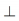
(정답률: 70%)
20. 기어를 제도할 때 피치원은 어느 선으로 표시하는가?
- 가는 1점쇄선
- 파선
- 가는 2점쇄선
- 가는 실선
(정답률: 62%)
21. 기계 조립 도면에서 투상도의 일부분과 그 부분에 기입된 치수가 비례하지 않는 경우 이를 표시할 필요가 있을 때는 어떻게 표시하는가?
- 치수 위에 굵은 실선을 긋는다.
- 치수 아래쪽에 굵은 실선을 긋는다.
- 다른 치수 보다 더 굵게 기입한다.
- 다른 치수 보다 더 크게 기입한다.
(정답률: 59%)
22. 나사붙이 테이퍼 핀 규격이 KS B 1308 - A - 6x30 -St 일때 테이퍼 핀의 호칭 지름은?
- 6 mm
- 8 mm
- 13 mm
- 30 mm
(정답률: 43%)
23. 대칭형인 대상물을 외형도의 절반과 온단면도의 전반을 조합하여 표시한 단면도는?
- 계단 단면도
- 한쪽 단면도
- 부분 단면도
- 회전 단면도
(정답률: 64%)
24. 도면에 나사 표시가 TW 18로 표시되었을 때 이 나사의 종류는?
- 미니추어 나사
- 관용 평행나사
- 유니파이 가는나사
- 29° 사다리꼴 나사
(정답률: 58%)
25. 끼워맞춤에서 구멍의 치수가 축의 치수보다 작은 경우 조립 전의 구멍과 축과의 치수 차를 무엇이라고 하는가?
- 공차
- 틈새
- 허용차
- 죔새
(정답률: 57%)
26. 칩이 생성되는 기본 형태에 해당하지 않는 것은?
- 유동형 칩
- 절단형 칩
- 전단형 칩
- 균열형 칩
(정답률: 58%)
27. 산화알루미늄 분말을 주성분으로 마그네슘(Mg), 규소(Si) 등의 산화물과 소량의 다른 원소를 첨가하여 소결한 절삭 공구 재료는?
- 초경 합금
- 주조 경질 합금
- 고속도강
- 세라믹
(정답률: 55%)
28. 일반적으로 선반의 크기 표시 방법으로 사용되지 않는 것은?
- 베드(bad) 상의 최대 스윙(swing)
- 왕복대 상의 스윙
- 베드의 중량
- 양 센터 사이의 최대거리
(정답률: 67%)
29. 선반용 바이트의 주요 각도 중 바이트의 옆면 및 앞면과 가공물과의 마찰을 줄이기 위한 각은?
- 경사각
- 여유각
- 공구각
- 절삭각
(정답률: 69%)
30. 선반 가공 중 테이퍼를 가공하는 방법이 아닌 것은?
- 회전 센터에 의한 방법
- 심압대 편위에 의한 방법
- 테이퍼 절삭 장치에 의한 방법
- 복식 공구대를 선회시켜 가공하는 방법
(정답률: 50%)
3과목: 기계공작법
31. 연삭에서 숫돌바퀴의 성능을 결정하는 요소가 아닌 것은?
- 숫돌의 입자와 입도
- 숫돌의 결합도와 조직
- 숫돌의 입도와 결합제
- 숫돌의 회전수와 이송속도
(정답률: 65%)
32. 나사의 유효지름 측정과 관계없는 것은?
- 삼침법
- 피치게이지
- 공구현미경
- 나사 마이크로미터
(정답률: 41%)
33. 호브를 돌리면 잇수에 대응하는 회전이송을 기어 소재에 주어, 창성법으로 기어의 이를 절삭하는 기어 절삭용 전용 공작기계는?
- 플레이너
- 셰이퍼
- 슬로터
- 호빙머신
(정답률: 52%)
34. 밀링머신에서 커터 1개의 날을 기준으로 한 테이블 이송 속도 f 는?(단, f : 테이블 이송속도(mm/min), fz : 1개의 날당 이송(mm), z : 커터의; 날수, n : 커터의 회전수(rpm), v : 절삭속도(m/min))
- f = fz × z × n
- f = fz × z × v
- f = fz × n × v
- f = fz × n × v × z
(정답률: 57%)
35. 입도가 작고, 연한 숫돌에 적은 압력으로 가압하면서 가공물에 이송을 주고 동시에 숫돌에 진동을 주어 표면 거칠기를 높이는 가공 방법은?
- 슈퍼피니싱
- 호닝
- 래핑
- 버핑
(정답률: 57%)
36. 측정기기의 종류 중 게이지 블록과 같은 표준 치수와 측정 대상물의 실제 치수를 비교하여 측정하는 비교 측정에 사용되는 측정기는?
- 다이얼 테스트 인디케이터
- 버니어 캘리퍼스
- 투영기
- 마이크로미터
(정답률: 57%)
37. 작은 지름의 일감에 수나사를 가공할 때 사용하는 공구는?
- 리머
- 다이스
- 보링
- 호브
(정답률: 60%)
38. 엔드밀에 의한 가공에 관한 설명 중 틀린 것은?
- 엔드밀은 홈이나 좁은 평면 등의 절삭에 많이 이용된다.
- 엔드밀은 가능한 길게 고정하고 사용한다.
- 휨을 방지하기 위해 가능한 절삭량을 작게 한다.
- 엔드밀은 가능한 지름이 큰 것을 사용한다.
(정답률: 60%)
39. 연삭 가공에 대한 설명으로 잘못된 것은?
- 숫돌바퀴는 공작물보다 단단한 입자로 결합되어 있다.
- 열처리되어 있는 단단한 공작물을 가공해서는 안 된다.
- 숫돌바퀴를 구성하는 작은 입자는 무수히 많은 커터와 같다.
- 가공면의 표면거칠기는 일반 공구로 가공한 것 보다 매우 우수하다.
(정답률: 59%)
40. 밀링 머신의 부속 장치에 해당하는 것은?
- 맨드릴
- 돌리개
- 슬리브
- 분할대
(정답률: 62%)
4과목: CNC공작법 및 안전관리
41. 윤활의 목적에 해당하지 않는 것은?
- 냉각작용
- 청정작용
- 방청작용
- 증발작용
(정답률: 70%)
42. 재표를 원하는 모양으로 변형하거나 성형시켜 제품을 만드는 기계 공작법의 종류가 아닌 것은?
- 소성 가공법
- 탄성 가공법
- 접합 가공법
- 절삭 가공법
(정답률: 43%)
43. 범용 공작기계와 비교한 CNC 공작기계의 장점이 아닌 것은?
- 유지보수 관리비용의 절감
- 리드 타임의 단축
- 품질의 균일성
- 사용기계수의 절감 및 공장크기 축소
(정답률: 39%)
44. 서보 제어방식 중 모터에 내장된 타코 제너레이터에서 속도를 검축하고, 기계의 테이블에 부착된 스케일에서 위치를 검출하여 피드백 시키는 방식은?
- 개방회로 방식
- 반폐쇄회로 방식
- 폐쇄회로 방식
- 반개방회로 방식
(정답률: 38%)
45. CNC 선반에서 주축 회전수에 2000 rpm 이고, 소재의 지름이 100 mm 일 때 절삭속도는 약 몇 m/min 인가?
- 314
- 826
- 341
- 628
(정답률: 56%)
46. CNC 프로그램에서 어드레스(Address)의 의미 설명 중 틀린 것은?
- G : 제어 장치의 내부기능을 제어하는 준비기능
- T : 주축의 시동, 정지, 역전에 사용하는 보조기능
- F : 이송의 수치와 속도를 관리하는 이송기능
- S : 주축 회전수를 선택할 때 사용하는 주축기능
(정답률: 63%)
47. 100 rpm으로 회전하는 스핀들에서 2회전 휴지를 프로그램 하려면 몇 초간 정지 시켜야 하는가?
- 12초
- 1200초
- 1.2초
- 120초
(정답률: 58%)
48. CNC 가공 프로그램에서 원호가공을 할 때 I, K 값은 어느 값으로 나타내는가?
- 절대 값으로만 명령이 가능하다.
- 축 방향 값으로 계산한다.
- 증분 값으로 나타낸 반지름 값이다.
- 증분 값으로 나타낸 직경 값이다.
(정답률: 48%)
49. CNC 선반 프로그램에서 G96 S130 M03 ; 에서 S130 의 의미는 무엇인가?
- 절삭속도(m/min)
- 절삭속도(m/rev)
- 주축 회전수(rpm)
- 주축 회전수(rev)
(정답률: 45%)
50. CNC 선반에서 공구 인선 반지름 보정 취소 코드(code)는?
- G41
- G42
- G49
- G40
(정답률: 49%)
51. 보조기능(M기능)에 대한 설명 중 틀린 것은?
- M00 : 프로그램(program) 정지
- M03 : 주축 정회전
- M08 : 절삭유 ON
- M99 : 보조프로그램 호출
(정답률: 60%)
52. 다음 CNC 선반 프로그램에서 나사가공에 사용된 고정 사이클은 어느 것인가?
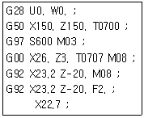
- G28
- G50
- G92
- G97
(정답률: 59%)
53. 머시닝센터에서 작업평면이 Y-Z일 때 지령되어야 할 코드는?
- G17
- G18
- G19
- G20
(정답률: 55%)
54. 드릴 작업시 주의 사항으로 틀린 것은?
- 작업 중 보안경을 착용한다.
- 일감을 정확하게 고정한다.
- 드릴을 고정하거나 풀 때는 주축이 완전히 멈춘 후에 한다.
- 얇은 판에 구멍을 뚫을 때는 손으로 누르고 드릴 작업을 한다.
(정답률: 81%)
55. 드라이 런 기능 설명으로 맞는 것은?
- 드라이 런 스위치가 ON되면 이송 속도가 빨라진다.
- 드라이 런 스위치가 ON되면 프로그램의 이송 속도를 무시하고 조작판에서 이송 속도를 조절할 수 있다.
- 드라이 런 스위치가 ON 되면 이송속도의 단위가 회전당 이송 속도로 변한다.
- 드라이 런 스위치가 ON 되면 금속속도가 최고 속도로 바뀐다.
(정답률: 51%)
56. 머시닝센터에서 도면의 치수대로 프로그램을 작성하고 공구지름 보정 옶셋 값으로 설정하는 보정 값은?
- 공구 지름의 0.5배
- 공구 지름의 1.0배
- 공구 지름의 1.5배
- 공구 지름의 2.0배
(정답률: 39%)
57. CNC 가공 프로그램을 작성하기 위하여 공작물의 임의의 점을 원점으로 정한 좌표계는?
- 기계 좌표계
- 절대 좌표계
- 상대 좌표계
- 잔여 좌표계
(정답률: 35%)
58. CNC 공작기계에서 "P/S_ALARM"이라는 메시지는?
- 프로그램 알람
- 비상정지 스위치 ON 알람
- 주축 모터 과열 알람
- 금지영역 침범 알람
(정답률: 57%)
59. CAD/CAM 소프트웨어에서 작성된 가공 데이터를 읽어 특정의 CNC 공작기계 컨트롤러에 맞도록 NC 데이터를 만들어 주는 과정은?
- 도형 정의
- 가공 조건
- CL 데이터
- 포스트 프로세서
(정답률: 49%)
60. 그림과 같은 복합 고정사이클 프로그램에서 빈칸 가, 나 에 말맞는 것은?
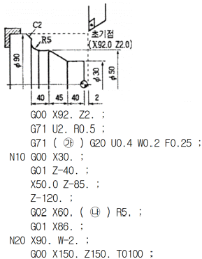
- N10. W-5.
- P10, W-5.
- P10, U-5.
- Q10, U-5.
(정답률: 45%)